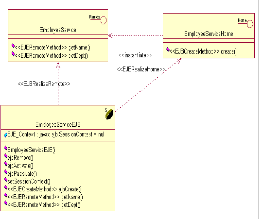
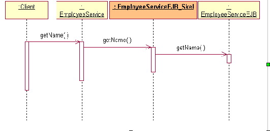
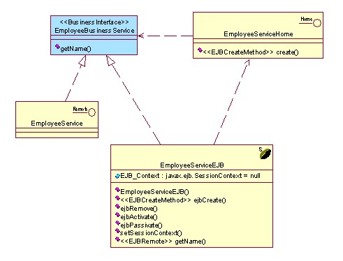
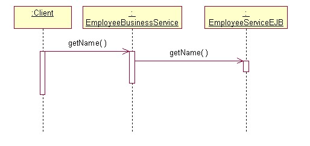
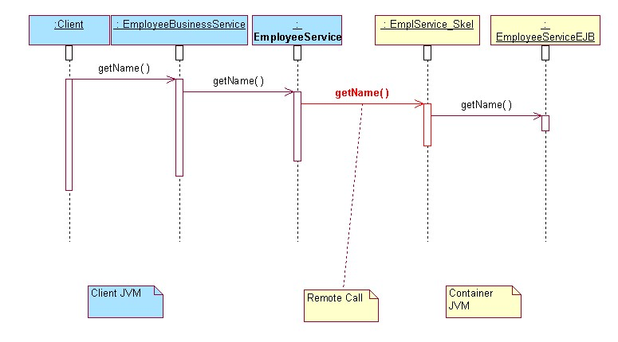
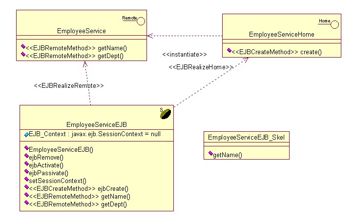
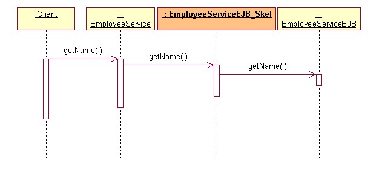
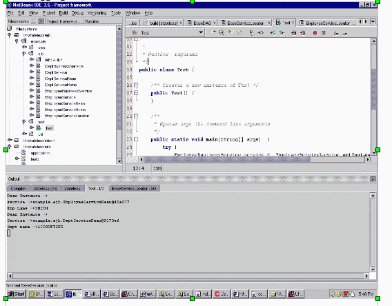
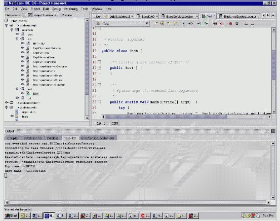

简介
EJB 开发从未变得如此简单。如果在逻辑上进行任何更改，则必须打包并重新部署到容器中以进行调试。此处，我介绍了如何在部署之前测试 EJB。这是 EJB3.0 的目标之一。（请参阅 http://java.sun.com/products/ejb/docs.html 中的 EJB3.0 规范。）我还附上了所介绍的示例的源代码。
目标读者
本文是为 EJB 开发者以及任何了解 Java、J2EE 的用户特别提供的阅读材料。
使用的工具
NetBeans3.6
流程
我不需要解释这种调试方法的优点。
让我们假定必须使用 EJB 开发员工门户。设计包含 EmployeeServiceEJB 和 DepartmentServiceEJB。如果传递了员工 ID，则 EmployeeServiceEJB 提供该员工的名字。如果传递了该 ID，此 EJB 还会返回员工的部门名称。为此，它先从 EmployeeServiceEJB 中获取部门 ID，然后从 DepartmentServiceEJB 中获取部门名称。让我们看一下如何开发 EJB 而不将其部署到容器中。
类
序列
在部署到容器时，将生成 EmployeeServiceEJB_Skel 类（名称取决于容器）。这是由容器生成的。
在进行调试的时候，无法使用该对象，因而无法在未部署的情况下调试 EJB。
要求
容器生成的类用于事务和远程处理等。从调试的角度看，这是将调用从远程接口委派给 Bean 类。
在 IDE 中调试时，需要采取某种方法以避免调用框架对象，因为在调试时不会生成这些对象。
通过使用业务接口，可以执行 Bean 方法而不调用容器生成的类。但在部署后，应通过这些容器生成的类调用 Bean 方法。这是通过服务定位器实现的。
类
 代码片段。[在类图中查看继承分层结构]
EmployeeBusinessService getEmployeeBusinessService() {
EmployeeBusinessService service = new EmployeeServiceEJB();
return service;
}

代码片段。[在类图中查看继承分层结构]
EmployeeBusinessService getEmployeeBusinessService() {
Context context = getContext("emp");
EmployeeServiceHome home = null;
Object homeObject = context.lookup("emp/ejb/EmployeeServicess");
home = (EmployeeServiceHome)PortableRemoteObject.narrow(homeObject, EmployeeServiceHome.class);
EmployeeService empService = home.create();
return empService;
}

服务定位器根据环境变量作出此决定。此环境变量是在服务器或 IDE 上配置的。完整的服务定位器方法如下所示：
public EmployeeBusinessService getEmployeeService() throws BaseException {
if( isServerDeployment() ){
try {
Context context = getContext("emp");
EmployeeServiceHome home = null;
Object homeObject = context.lookup("emp/ejb/EmployeeServices");
home =EmployeeServiceHome)PortableRemoteObject.narrow(homeObject, EmployeeServiceHome.class);
EmployeeService empService = home.create();
//INSTANCE OF EMPLOYEE BEAN REMOTE INSTANCE
return empService;
}catch(Exception e) {
e.printStackTrace();
throw new BaseException(e.getMessage());
}
}else{
//INSTANCE OF EMPLOYEE BEAN
return new EmployeeServiceBean();
}
}
protected boolean isServerDeployment() {
String DEPLOYMENT_TYPE = System.getProperty("deployment.type"); return ("Server".equalsIgnoreCase(DEPLOYMENT_TYPE))?true:false;
}
protected Context getContext(String appName) throws Exception {
Hashtable env = new Hashtable();
env.put(Context.INITIAL_CONTEXT_FACTORY, INITIAL_CONTEXT_FACTORY);
env.put(Context.SECURITY_PRINCIPAL, SECURITY_PRINCIPAL);
env.put(Context.SECURITY_CREDENTIALS, SECURITY_CREDENTIALS);
env.put(Context.PROVIDER_URL, BASE_PROVIDER_URL+appName);
System.out.println("Connecting to Base URL"+ BASE_PROVIDER_URL+appName);
return new InitialContext(env);
}
可以使用 -d 选项设置环境变量 deployment.type。在服务器启动脚本中，-ddeployment.type=server。在 IDE java 参数中，-ddeployment.type=ide。
由于在 IDE 环境中无法使用连接池，因此，需要在调试时使用直接连接。
如果代码是在服务器 JVM 中执行的，它将选择池连接，否则，将创建直接连接。
protected Connection getConnection() throws SQLException {
Connection con = null;
try {
if( isServerDeployment() ) {
con = getPooledConnection();
}else {
con = getDirectConnection();
}
}catch(SQLException sqle) {
throw sqle;
}catch (Exception e){
e.printStackTrace();
}
return con;
}
可以使用 JUnit 测试脚本对 EJB 进行单元测试。
public void testGetEmpName() throws Exception {
EmployeeBusinessService business = EmployeeServiceLocator.getInstance().getEmployeeService();
String name= business.getEmpName("1234");
assertEquals(name,"abcd");
}
如果使用 deployment.type=ide 运行此测试脚本，则会在 IDE 中执行该脚本，否则，它在容器中调用该方法。即，在开发时以及部署后，可以使用相同脚本进行测试。因此，应正确设置 jndi.properties。
如果使用 log4j 记录信息，则必须使用 log4j.properties 对其进行初始化。以下代码片段实现了此目的。
org.apache.log4j.PropertyConfigurator.configure("{server.dir}/log4j.properties");



这是通过更改 deployment.type=server 实现的。
